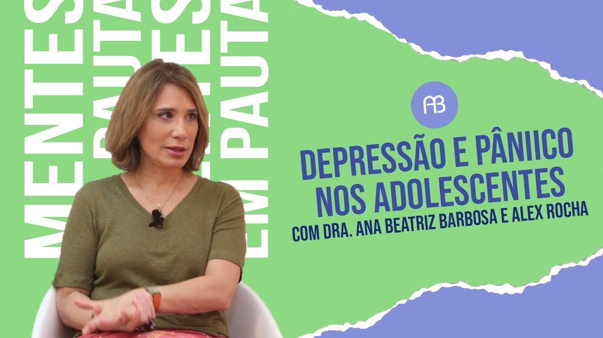
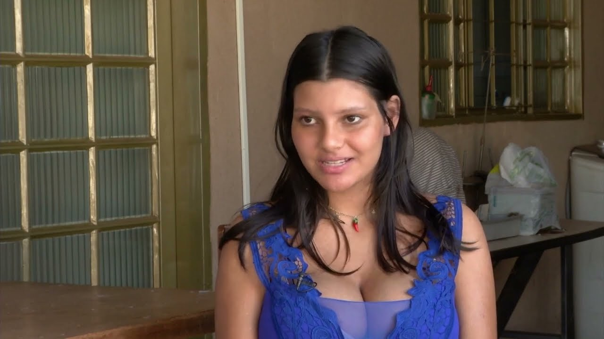
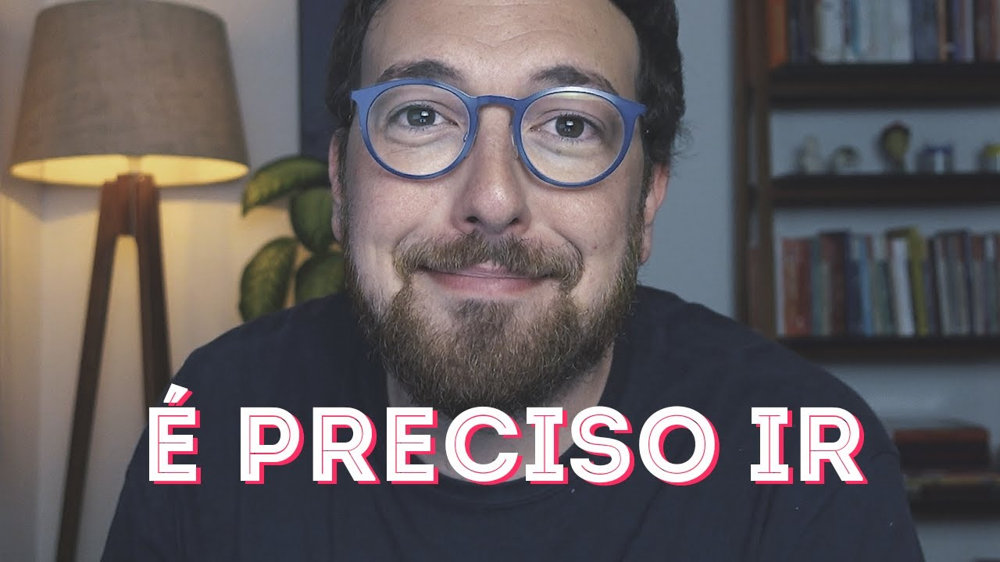

Depressão

Carta aberta para o vazio (e pra quem se perdeu nele) (11:31)
DEPRESSÃO E PÂNICO NOS ADOLESCENTES | ANA BEATRIZ (6:40)
Gravidez
GRAVIDEZ NA ADOLESCÊNCIA | COMO DESCOBRI MINHA GRAVIDEZ AOS 16 + REAÇÃO DA FAMÍLIA | chorei muito 😭 (14:33)
GRAVIDEZ NA ADOLESCÊNCIA - DESCONSTRUINDO ESTEREÓTIPOS DE (IR) RESPONSABILIDADE (19:57)
Desilusão Amorosa

Como seguir em frente se ainda há sentimento? (10:57)
Conselhos que toda jovem entre 13 e 17 anos PRECISA ouvir! (28:20)